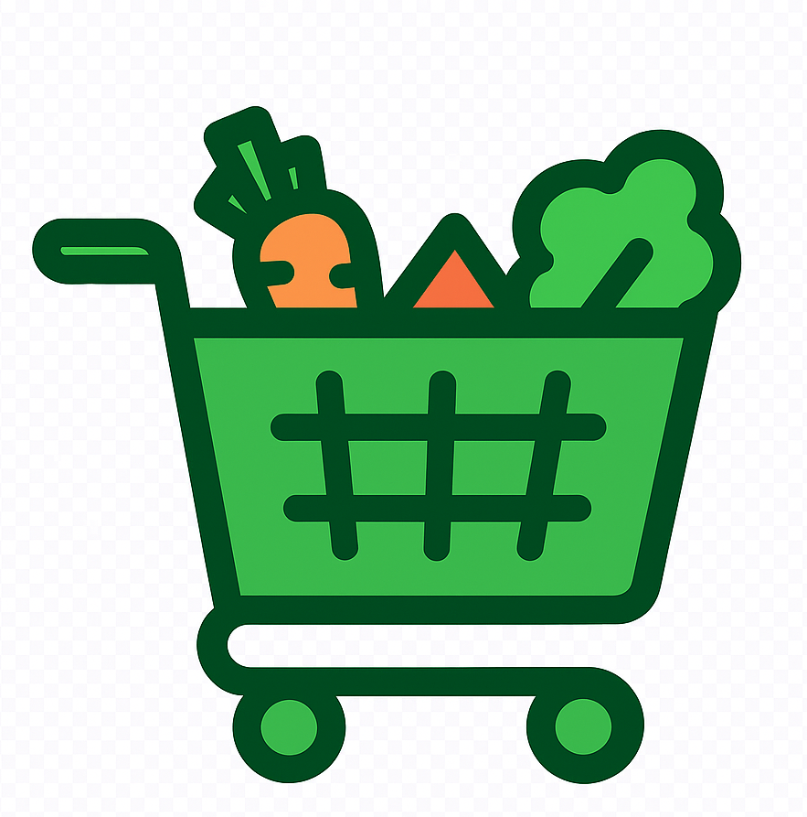
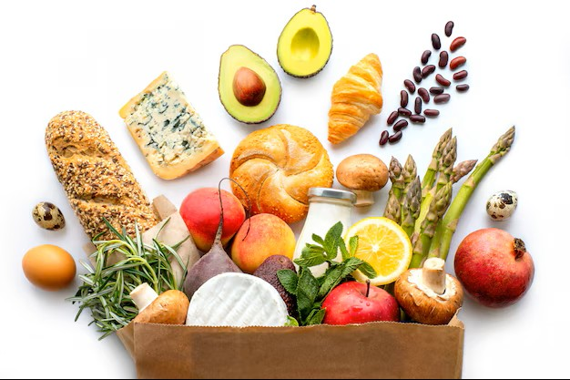

Productos destacados
Descubre nuestros productos más populares y frescos:
- Frutas y verduras
- Carnes y pescados
- Lácteos y huevos
- Panadería y pastelería

Tu tienda de confianza

Descubre nuestros productos más populares y frescos:
Aprovecha nuestras promociones exclusivas: